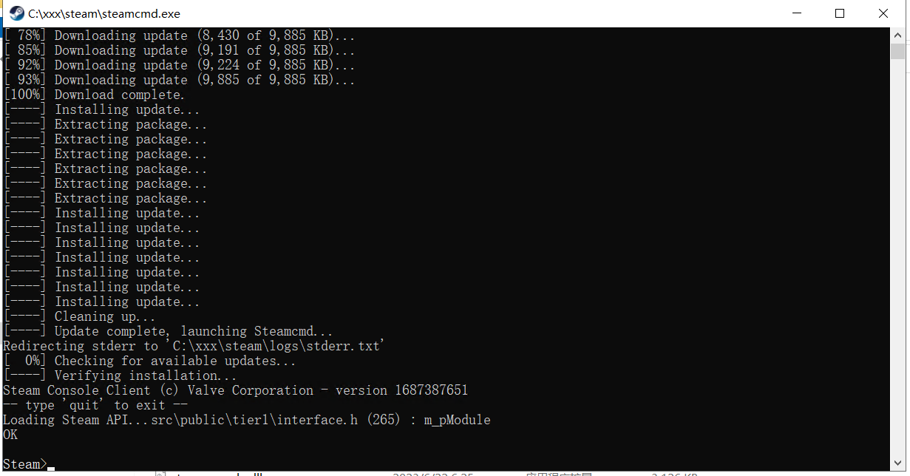

V rising 私服搭建¶
一、安装¶
1.下载，解压Steamcmd，一定看清楚要解压。¶
2.启动Steamcmd.exe¶
当出现了Steam>表示进入了steam的控制台，可以进入下一步。

3.匿名登陆¶
login anonymous
因为网络问题，很可能会出现 time out 这样的文字，只需要重新输入命令就行了。
登陆成功：

4.安装V rising¶
VRising的服务器的appid是1829350
app_update 1829350 validate
耐心等待安装即可

二、初始化¶
笔者也曾试过单独弄一个文件夹来存放配置文件，考虑到上手的难度，大家可以直接在备份
默认配置文件之后直接进行修改，然后直接启动服务器，非常的方便，而且不容易错，即使出错，一件导入默认备份文件也能快速恢复。
1.备份官方配置文件¶
- 默认配置文件一般在
steamapps\common\VRisingDedicatedServer\VRisingServer_Data\StreamingAssets\Settings里面。 - 将这四个文件复制备份。
笔者这里就三个文件，少一个banlist文件不影响。

2.修改配置文件¶
切记！切记！一定不要直接复制网上那些教程的写好的服务器设置文件。
因为他们的
某些参数在你的配置文件里是不应该存在的。笔者就因为第一次直接复制别人的配置文件，导致服务器参数设置一直不生效，又因为忘记备份，无奈一行一行的寻找不应该存在的参数，将他们删掉。
最好的办法就是自己搜索自己需要的参数，搜索之后进行修改。
HostSettings的修改¶
下面注释了几个建议修改的选项，如果你的配置文件有，可以修改；没有的话，也不要添加。
{
"Name": "Fxxk",
"Description": "",
"Port": 9876, # 服务器登陆端口 需要在控制台开放端口
"QueryPort": 9877, # 服务器查询端口
"MaxConnectedUsers": 10, # 最大人数
"MaxConnectedAdmins": 4,
"ServerFps": 30, # 帧数，根据服务器性能决定
"SaveName": "world3",
"Password": "8989765",# 服务器密码
"Secure": true, # 服务器保护
"ListOnMasterServer": true,
"AutoSaveCount": 20,
"AutoSaveInterval": 120, # 服务器多少秒自动保存一次
"GameSettingsPreset": "",
"AdminOnlyDebugEvents": true,
"DisableDebugEvents": false,
}
GameSettings的修改¶
列举了部分参数的说明。
切记！如果你的配置文件里面有，就修改，没有的话最好不要添加。
{
"GameModeType": "PvP", //游戏模式类型可选PvE
"CastleDamageMode": "Always", //城堡伤害模式
"SiegeWeaponHealth": "Normal", //攻城武器生命值
"PlayerDamageMode": "Always", //玩家伤害模式
"CastleHeartDamageMode": "CanBeDestroyedByPlayers", //城堡生命伤害模式
"PvPProtectionMode": "Medium", //PvP保护模式
"DeathContainerPermission": "Anyone", //死亡容器权限
"RelicSpawnType": "Unique", //遗迹生成类型
"CanLootEnemyContainers": true, //可以掠夺敌人的箱子
"BloodBoundEquipment": true, //血缘装备
"TeleportBoundItems": true, //传送绑定道具
"AllowGlobalChat": true, //允许全局聊天
"AllWaypointsUnlocked": false, //所有航路点已解锁
"FreeCastleClaim": false, //自由城堡领地
"FreeCastleDestroy": false, //自由城堡摧毁
"InactivityKillEnabled": true, //已启用非活动清理
"InactivityKillTimeMin": 3600, //非活动事件或AI清理最小时间
"InactivityKillTimeMax": 604800, //非活动事件或AI清理最大时间
"InactivityKillSafeTimeAddition": 172800, //非活动增加清理保护时间
"InactivityKillTimerMaxItemLevel": 84, //非活动道具最大时间清理等级
"DisableDisconnectedDeadEnabled": true, //启用无效连接断开
"DisableDisconnectedDeadTimer": 60, //无效连接断开最大时间
"InventoryStacksModifier": 1.0, //一堆库存道具百分比
"DropTableModifier_General": 1.0, //常规数据删除百分比
"DropTableModifier_Missions": 1.0, //任务数据删除百分比
"MaterialYieldModifier_Global": 1.0, //全局材料产量百分比
"BloodEssenceYieldModifier": 1.0, //精血生产百分比
"JournalVBloodSourceUnitMaxDistance": 25.0, //记录V血源装置最大距离
"PvPVampireRespawnModifier": 1.0, //PVP吸血鬼复活概率
"CastleMinimumDistanceInFloors": 2, //城堡楼层之间最小距离
"ClanSize": 4, //宗族领主领地规模
"BloodDrainModifier": 1.0, //精血消耗百分比
"DurabilityDrainModifier": 1.0, //耐力消耗百分比
"GarlicAreaStrengthModifier": 1.0, //大蒜面积强度百分比
"HolyAreaStrengthModifier": 1.0, //神圣区域强度百分比
"SilverStrengthModifier": 1.0, //银强度百分比
"SunDamageModifier": 1.0, //太阳伤害强度百分比
"CastleDecayRateModifier": 1.0, //城堡衰退速度百分比
"CastleBloodEssenceDrainModifier": 1.0, //城堡精血消耗百分比
"CastleSiegeTimer": 420.0, //城堡攻城时间
"CastleUnderAttackTimer": 60.0, //城堡受到攻击的时间
"AnnounceSiegeWeaponSpawn": true, //通知攻城武器生成
"ShowSiegeWeaponMapIcon": true, //显示攻城武器地图图标
"BuildCostModifier": 1.0, //建筑成本百分比
"RecipeCostModifier": 1.0, //配方成本百分比
"CraftRateModifier": 1.0, //技能速度百分比
"ResearchCostModifier": 1.0, //研究成本百分比
"RefinementCostModifier": 1.0, //精炼成本百分比
"RefinementRateModifier": 1.0, //精炼速度百分比
"ResearchTimeModifier": 1.0, //研究时间百分比
"DismantleResourceModifier": 0.75, //拆除成本百分比
"ServantConvertRateModifier": 1.0, //仆人转化速度百分比
"RepairCostModifier": 1.0, //维护成本百分比
"Death_DurabilityFactorLoss": 0.25, //消亡耐久性损失系数
"Death_DurabilityLossFactorAsResources": 1.0, //消亡耐久性资源损失系数
"StarterEquipmentId": 0, //初始装备ID
"StarterResourcesId": 0, //初始资源ID
"VBloodUnitSettings": [], //V血液单位设置
"UnlockedAchievements": [], //未锁定的成就
"UnlockedResearchs": [], //未解锁的研究
"GameTimeModifiers": { //游戏时间百分比
"DayDurationInSeconds": 1080.0, //日持续时间（秒）
"DayStartHour": 9, //白天开始时间
"DayStartMinute": 0, //日开始分钟数
"DayEndHour": 17, //白天结束时间
"DayEndMinute": 0, 白天结束分数
"BloodMoonFrequency_Min": 10, //血月频率最小值
"BloodMoonFrequency_Max": 18, //血月频率最大值
"BloodMoonBuff": 0.2 //血月buff
}
三、XX，启动！¶
度过了安装和配置环节，下面的启动服务器环节特别简单。
在steamapps\common\VRisingDedicatedServer文件夹里面找到这个红色的exe，双击启动即可。

特殊环节¶
1.启动服务器失败¶
Failed to connect to vrising-client.s3.eu-central-1.amazonaws.com port 443 after 130628 ms: Timed out
则需要修改host
- 打开浏览器，打开https://www.ipaddress.com/，然后输入
vrising-client.s3.eu-central-1.amazonaws.com来解析IP。 - 打开
C:\Windows\System32\drivers\etc\hosts。 - 在最底下添加
xx.xx.xx.xx vrising-client.s3.eu-central-1.Amazonaws.com，用你刚刚获取的IP替换xx.xx.xx.xx。
2.如何更新V rising¶
安装和更新的代码一样，先匿名登陆，再进行安装
login anonymous
app_update 1829350 validate
OU WA li¶
快乐玩耍吧！